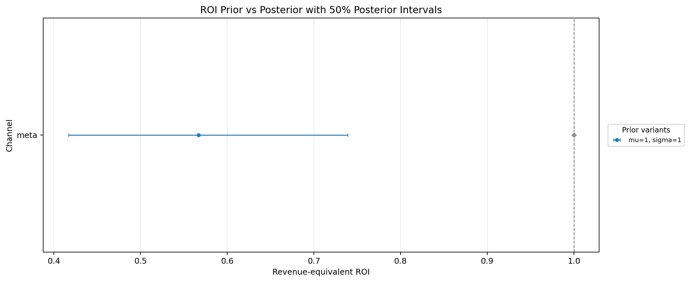

Run Details & Diagnostics
Run Configuration Summary
Generated report configuration and quality status for this audit.
Analysis Setup
Prior-Sensitivity Audit Summary
Which channels were most sensitive to their own prior assumptions?
Audit completion
Completed
Main sensitivity question
Own-prior movement by channel
Largest Tornado Channel
-
-
Interpretation status
Pending diagnostics
Self-Response ROI Movement Range (%)
Each bar shows how a channel's own posterior ROI changes when that same channel's prior is perturbed.
Diagnostic Context
PASS / REVIEW / FAIL
-
Good enough to interpret?
-
Primary review check
-
-
Sensitivity interpretation pending diagnostics.
Sensitivity Risk Matrix
Channels grouped by movement size and interpretation readiness.
Full-System Prior Response
What happens to the full MMM system when one channel's prior assumptions are perturbed?
Structural Response
Carryover and saturation context for the selected channel.
Model Health & Diagnostics
Meridian sampling diagnostics and QC checks for the completed runs above.
PriorPosteriorShift means the posterior moved substantially away from the prior, so this run needs follow-up review before stronger interpretation.
Target Channel
Selected Target Channel
Signed Posterior ROI Change vs Baseline (%)
Full-system responseTarget-Level Robustness Framework
selected target perturbation scope
Robustness Score
Not available
Unavailable
Robustness model output is unavailable for this demo; score framework is shown for reference.
Full-System Movement Detail
Prior vs Posterior Evidence
ROI Prior vs Posterior with 50% Posterior Intervals

Prior Scenario Studio
Interactive workbench: pick a hypothetical ROI prior to see how the selected channel's response surface moves.
ROI
Selected Prior
-
Baseline -
Delta -
Change -
Contribution
Selected Prior
-
Baseline -
Contribution Share
Selected Prior
-
Baseline -
Prior Grid
Baseline
- / -
ROI Mu / ROI Sigma baseline
Selected Channel Mu x Sigma ROI Heatmap
Mu Marginal Response (Selected Sigma)
Sigma Marginal Response (Selected Mu)
Structural Controls
Reference profile and current carryover/saturation settings.
0.30
0.50
1.20
4
Adstock Memory Curve
Carryover weight by lag.
Saturation Response Curve
Response curve vs spend index.
Structural Readout
Current response settings.
Immediate vs Carryover
Immediate and delayed response split.
Allocation Gap
Dumbbell view by channel (effect share minus spend share).
Official Meridian health card not found yet.